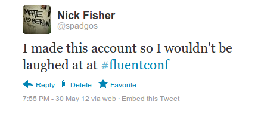
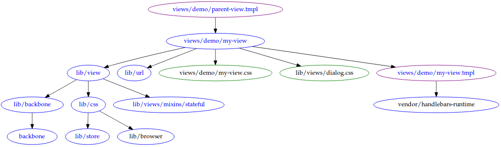

Who am I not?

@nickfishermusic
github.com/spadgos
@spadgos

Infrastructure
NodeJS
Uglify
RequireJS
AlmondJS
Run time
Backbone
Handlebars
Libraries
Underscore
jQuery
SoundManager
var View = require('lib/view'),
URL = require('lib/url');
module.exports = View.extend({
template: require('views/my-view.tmpl'),
css: [
require('views/my-view.css'),
require('lib/views/dialog.css')
]
});
define("views/my-view", [
"require", "exports", "module",
"lib/view", "lib/url",
"views/my-view.tmpl",
"views/my-view.css", "lib/views/dialog.css"
], function () {
var View = require('lib/view'),
URL = require('lib/url');
// ...
});
Wait, what? CSS?
var style = module.exports
= document.createElement('style');
style.appendChild(
document.createTextNode('.myStyles {...}')
);
Why not write directly in AMD?
- Too much boilerplate
- Tedious
- Error prone
- Easily automated

Build
if (__DEBUG_WARNINGS__ && !clientId) {
console.warn('No clientId');
}
Serve
Views
- Components: independent, reusable
- Some are composite (whole pages)
- Most are very small (button, label)
- Markup + behaviour = view
Views must play nice
- No modifying other views (behaviour or style)
- No assumptions about where or how it's being used
<div class="actions">
{{view "views/buttons/like" resource_id=id}}
{{view "views/buttons/repost"
resource_id=id
icon_only=true
}}
</div>
Models
Some problems
- Views need to share, not duplicate, the data
- There might not be any data
s1 = new Sound({ id: 123, title: 'foo' });
s2 = new Sound({ id: 123, bpm: 120 });
s1 === s2; // true
s1.get('bpm'); // 120
s2.get('title'); // 'foo'
*Somewhat simplified
var store = {};
function Model (id) {
if (store[id]) {
return store[id];
}
store[id] = this;
}
Preventing concurrent fetches
- Use
$.Deferred, jqXHR
- Start a fetch, hang on to the deferred
- If already fetching, return the existing deferred
- Same interface, different actions
api.soundcloud.com/tracks/49931
{
"id":49931,
...
"user":{
"id":1433,
"permalink":"matas",
"username":"matas",
"avatar_url":"http://i1.soundc..."
}
}
Learning to let go
- "Construct" a model:
usage++
- Reference not needed:
usage--
- Remove unused references periodically
Cross tab communication with localStorage
Volume, play state synchronised